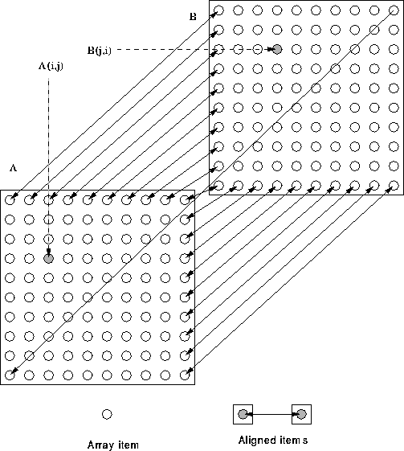

Next: Strided Alignment Example
Up: Data Distribution
Previous: Transposed Alignment Example

This alignment is suitable for,
A = A + TRANSPOSE(B)*A ! all local
For more information, click here

Next: Strided Alignment Example
Up: Data Distribution
Previous: Transposed Alignment Example
Adam Marshall ©University of Liverpool, 1996
Tue Nov 26 19:51:50 GMT 1996